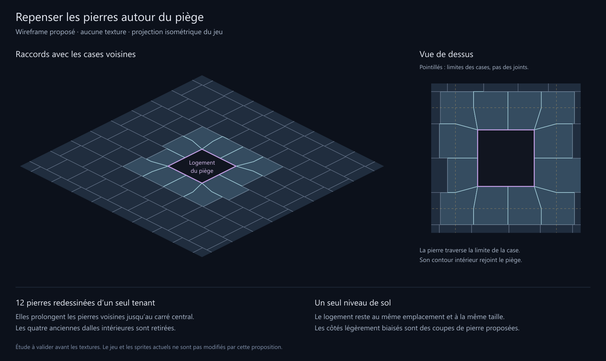

Agrandir le détail · Géométrie · Vérifications
Proposition de wireframe uniquement. Les contours de pierre en bleu clair sont redessinés depuis les cases voisines jusqu’au logement du piège. La pente de certains joints est une proposition de découpe, à valider avant les textures.